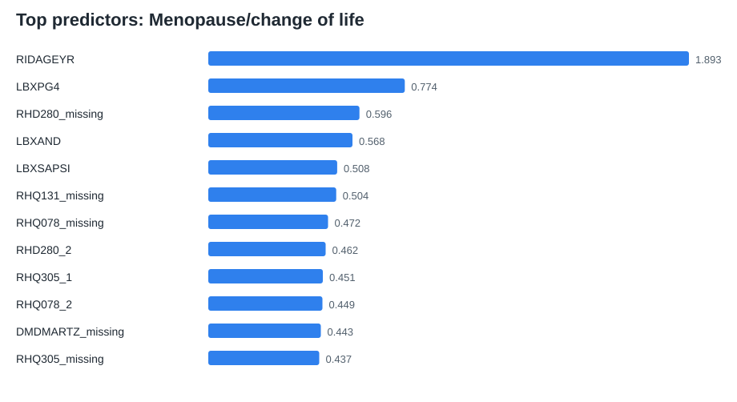
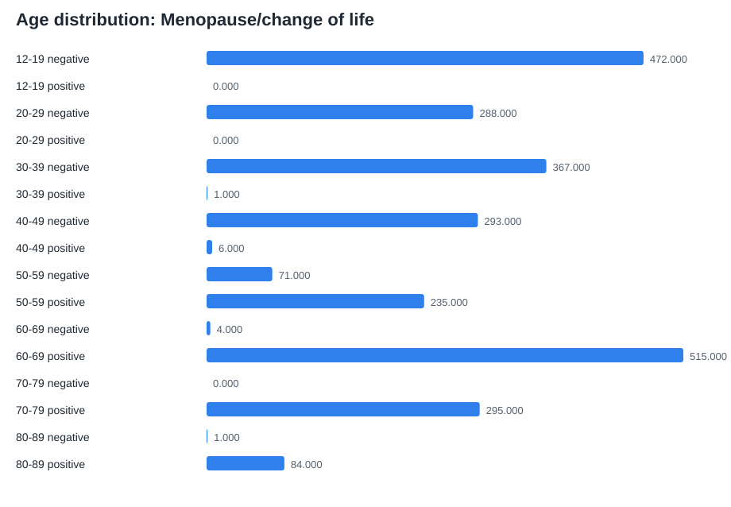

Chosen Problem
Menopause-related hormonal health prediction
The project asks for one reusable building block for women's hormonal health AI. This benchmark predicts whether a female NHANES participant reports menopause/change of life as the reason for not having regular periods, using public reproductive-health, body-measure, hormone, metabolic, inflammation, and lipid data.
Benchmark Rows
2,632
Positive Cases
1,136
Raw Merge Rows
3,917
Working Prototype
Dataset builder + baseline model
1Load NHANES XPT files
2Merge by respondent ID
3Create benchmark targets
4Train logistic regression
5Export metrics, predictions, charts
The prototype is implemented in src/baseline.py. It is dependency-light, reproducible, and produces reusable processed datasets and evaluation artifacts.
Results
Baseline performance and explainability
Accuracy
0.9507
F1
0.9467
ROC AUC
0.9941


Responsible Design
Research benchmark, not diagnosis
- No medical advice or diagnosis.
- Uses public de-identified NHANES data.
- Documents target definitions, limitations, and class balance.
- Frames the weaker reproductive-age task as evidence that richer longitudinal datasets are needed.